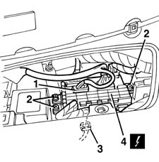

5505A10 electrical junction unit - r+r
- Path
- Procedures > 55 ELECTRICAL EQUIPMENT > 5505 INSTRUMENT/GUAGE ELECTRICAL WIRING > 5505A multi-function components > 5505A10 electrical junction unit - r+r
- Kind
- repair procedure (removal / refitting; the operation number is the code)
- Applies to
- all engines; all production periods
- Interactive page
- https://sloeber94.github.io/elrnDB-fMltpl/en/#/2891864
Applies to: all engines; all production periods
Applies to: all engines; all production periods
 Removing
Removing
 Refitting
Refitting1. Disconnect the electrical connections at the front.
 | Name | Connector |
|---|---|---|
1 | Junction unit |
2. Undo the bolts.
3. Move the control unit slightly and disconnect the electrical connections at the rear.
4. Remove the junction unit.

Applies to: all engines; all production periods
Refitting
RemovingCheck that the junction unit is not damaged and, if necessary, check the internal connections.
Position the junction unit.
Connect the rear electrical connections.
Tighten the bolts.
Connect the front electrical connections.
Test the electrical system.